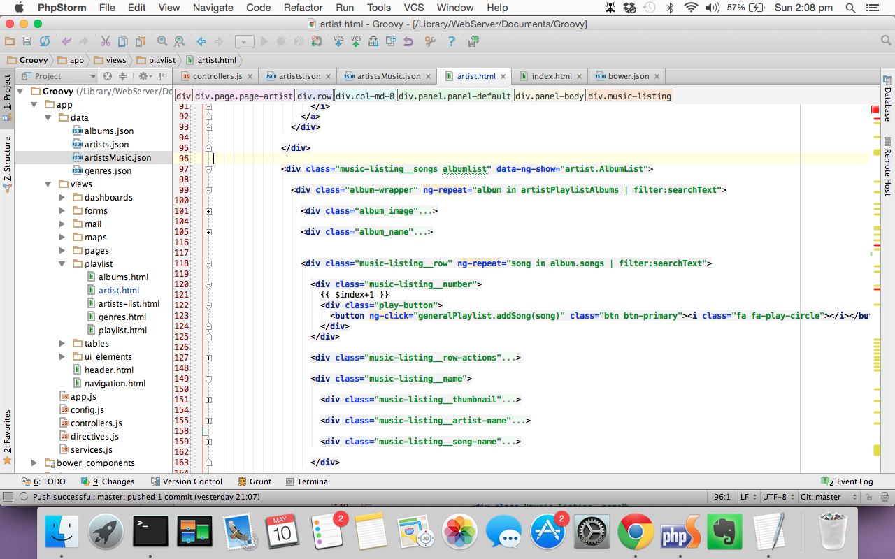

Groovy
Angular js music theme
- created: 11/12/2014
- latest update: 02/14/2016
- by: Joao Garin
- themeforest.joaogarin.com/Groovy
- email: joao.garin@gmail.com
Thank you for buying the theme
Installation
Installing
To deloy the theme simply put the files into your webserver (ex : www.example.com) and navigate to it through the browser
Changing and deploying
The theme comes with grunt.js integration and bower so in order to have an optimised installation the recommended way is buy performing the grunt and bower tasks described bellow.
Development
For development purposed javascript files and css files will not be compressed in order to be able to debug and find easily where any issue is.
Testing
The theme contains a test grunt task using jshint to go trough the code and find possible issues with the code.
Production / Minified
Minified task compresses css files, js files, compiles html templates in to javascript all in order to fully optimize the final application and make it as fast and reliable as possible.
How to perform the grunt tasks :
To perform the grunt tasks you will need the following things installed in either your local maching (recommended) or on the webserver, depending where you are performing the tasks. For more information on grunt follow this link : http://gruntjs.com/
1 ) Install node.js on your maching. It provides also installations for all other platforms : http://nodejs.org/download/
On Ubuntu running the sudo apt-get install nodejs might run into problems as the version available in the package manager is not supported. For more info check : http://stackoverflow.com/questions/12913141/installing-from-npm-fails
2 ) Before setting up Grunt ensure that your npm is installed and up-to-date by running npm update -g npm (this might require sudo on certain systems). To install on linux you can run : sudo apt-get install npm
2 ) Install grunt Command line interface (CLI) by following : http://gruntjs.com/getting-started
3 ) make sure all packages are installed by running in your application root folder the following : sudo npm install
4 ) Enable all dependencies by running : bower install
5 ) Run the task you want :
- grunt dev (grunt --force dev for forcing erros to pass)
- grunt test (grunt --force test for forcing erros to pass)
- grunt minified (grunt --force minified for forcing erros to pass)
This will compile the scripts in the application (app, controllers, directives, services, all extra scripts like all the charting libraries etc) and put them into one single js file and one single css file inside the destination folder in this case "dist".
After that simply push your root files and the dist folder into the webserver and you are done! You have a full compressed and optimized site running.
Files contained in the compressed application :
- index.html
- images
- fonts
- dist
package.json - Development dependencies
In the file package.json are included the development dependencies, namely all the grunt modules to be able to run grunt to compile the theme. To instal the dependencies run npm install and this will install all the dependencies.
To install a new dependency and save the dependency run the following command :
- npm install npm_module --save-dev
Bower.json - External dependencies
All dependenies are listed in the bower.json file. When running bower install all dependencies like jquery, angular, chartjs etc will be installed in the folder bower_components.
The following dependencies are included in the bower.json :
"dependencies": {
"angular": "~1.3.13",
"angular-animate": "~1.3.13",
"angular-route": "~1.3.13",
"underscore": "~1.8.1",
"angular-wizard": "~0.4.2",
"angular-ui-tree": "~2.2.0",
"jquery": "~2.1.3",
"bootstrap": "~3.2.0",
"fontawesome": "~4.3.0",
"jqvmap": "*",
"weather-icons": "~1.3.2",
"angular-sanitize": "~1.3.13",
"angular-bootstrap": "~0.12.0",
"slimScroll": "~1.3.3",
"dripicons": "~1.0.0",
"angular-media-player": "~0.5.8"
}
To include new dependencies run the following command to both install and save the dependency :
- bower install package_name --save
Note :
When prompted for the AngularJS version choose version 1.3.20
Application Structure
The application is organized in a way that is easy to fnd and change any script, separating the logic on controllers, directives, services and external libraries.
The HTML templates are also separate using angular-route to map between templates for a more performant and clean structure. Next are described all parts of the application and what to find in each of these parts :
index.html

Contians all the main includes, the overall sctructure of the page. Here is where lies the main imports for javscript and css, font, and HTML dom representation. Templates of specific pages are not present here but imported using ng-include
Bower components
In this folder are included all external libraries to be used by the theme, angular scripts, jquery, underscore, and all other libraries are imported from this folder. This folder does not contain app specific files but only external libraries. Files are included in this folder via bower (check previous chapter in Bower.json - External dependencies)
Scripts
In this folder are included other scripts necessary to the theme. These are not available via bower so they are included manually in this folder.
Styles
In this folder are included the stylesheets for the application. whenever you want to make changes to the style of the application you can make them here. These files are included to be compressed in the Gruntfile.js where they will be minified and compressed and imported into the "dist" folder.
Images
This is the folder where all images are stored.
Fonts
The fonts directory contains fonts for the application. The fonts include the font awesome icons and glyphicons as well as the weather icons.
App
The app directory is where the Angular app resides. here are all the templates, directives, controllers,main app file and services. The app directory contains 4 javascript files :
- app.js - The main app javascript file
- controllers.js - Where all the controllers are located
- directives.js - Where all the directives are located
- services.js - Where all the services are located
It also contains a "views" folder and a data folder. The views folder contains the templates for each view in the app. You can check which view corresponds to each path by looking at the app .config method in the app.js file.
The data folder contains json files that mimic the response to be provided by external webservices. These provide the data for the theme to work (musics, artists, albums etc).
Media Player
The theme uses https://github.com/mrgamer/angular-media-player to play music, including a general playlist (the user's currnet playlist available in the controller PlayListCtrl
PlayListCtrl
This controller is responsible for displaying, playing and managing whatever the user has decided to add to the Queue (current playlist).
This controller includes methods such as add song, remove song, drop song (for drag and drop) and create new Playlist.
Creating new playlists
The user can create new playlists for himself. Currently this playlists are added to the user's localStorage, which mimifies the server where user's playlists woud be saved. The method createNewPlaylist calls a service method that is responsible for handling this.
To replace this with a server simply change the method in services.js so that this saves the playlist in a webserver (via webservices) and not in localStorage.
Listing songs
artistPlaylistVar.push({
image: song.image,
src: song.url,
url: song.url,
type: 'audio/ogg',
artist: parseTitle[1],
title: parseTitle[2],
displayName:song.displayName
});
We can see that each song must have each of this fields including the type of file, src of the file and also artist title, song title and display name.
Artist list
The artists listing page is a simple controller that , again, calls a service that gets the listing of Artists from a file (mimics the server) where artists are fetched from HTTP request.
To change where this artist list comes from simply change the call from this file to an actual server returning the same json file formatted as bellow :
[ { "url_name": "thelunatics", "name": "Jason Derulo", "image": "dist/images/artists/artist1.jpg", "genre": ["Pop","Rock","Folk"], "about": "Great music inspired by early electronic sounds, combining the symphony of classical instruments and complete surrounding" }, { "url_name": "lafiestanegra", "name": "John Legend", "image": "dist/images/artists/artist2.jpg", "genre": ["New age","Celtic","World"], "about": "Great music inspired by early electronic sounds, combining the symphony of classical instruments and complete surrounding" },....
Artist sogns / detail information
The artists detail page and artists detail information is also a controller that , again, calls a service that gets the listing of Artists from a file (mimics the server) where artists are fetched from HTTP request.
To change what songs / artists and info gets returned to this view simply change the call from this file to an actual server returning the same json file formatted as bellow :
[ { "url_name": "thelunatics", "name": "The lunatics", "banner": "dist/images/artists/artistbanner1.jpg", "image": "dist/images/artists/artist1.jpg", "genre": ["Pop","Rock","Folk"], "about": "Great music inspired by early electronic sounds, combining the symphony of classical instruments and complete surrounding", "albums": [ { "album_name":"The king of Freedom", "album_image":"dist/images/albums/album1.jpg", "album_release":"April 2010", "songs": [ {"image": "dist/images/songs/song1.jpg", "url": "http://upload.wikimedia.org/wikipedia/en/d/d0/Beatles_com etogether.ogg", "displayName": "The lunatics - Come Together" }, {"image": "dist/images/songs/song2.jpg", "url": "http://upload.wikimedia.org/wikipedia/en/8/8c/Beatles_drive _my_car.ogg", "displayName": "The lunatics - Drive my car" }, {"image": "dist/images/songs/song3.jpg", "url": "http://upload.wikimedia.org/wikipedia/en/1/1b/Beatles_loser .ogg", "displayName": "The lunatics - Loser" }, {"image": "dist/images/songs/song4.jpg", "url": "http://upload.wikimedia.org/wikipedia/en/5/5a/Beatles_all_ my_loving.ogg", "displayName": "The lunatics - All my loving" }, {"image": "dist/images/songs/song5.jpg", "url": "http://upload.wikimedia.org/wikipedia/en/8/82/Beatles_taxm an.ogg", "displayName": "The lunatics - Taxman" }, {"image": "dist/images/songs/song6.jpg", "url": "http://upload.wikimedia.org/wikipedia/en/d/d0/Beatles_com etogether.ogg", "displayName": "The lunatics - Tonight we do" } ] },...
Each artist has a list of albums, each of which contains a list of songs. This gets then parsed in the ArtistCtrl controller to diplay the items correctly in the view as following :

Albums
The albums listing page is a simple controller that , again, calls a service that gets the listing of Albums from a file (mimics the server) where artists are fetched from HTTP request. The file is inside the folder app/data/albums.json
Genres
The genres listing page is a simple controller that , again, calls a service that gets the listing of Genres from a file (mimics the server) where artists are fetched from HTTP request. The file is inside the folder app/data/genres.json
CSS Files
In the theme there are several SCSS files inside the "styles" folder. These files are organized as mention in the first chapter in the following folders :
- Partials - The partials are mixins that are used across the application like @include box-shadow
- Base - The base CSS files styling general elements like forms, buttons, cards, labels, lists etc
- Settings - Cotains the settings for the application. Working like a configuration for the application CSS. Contains the colors of the theme in the file colors.scss
- Components - Application specific components like Playlist, Artists page, albums detail page, other pages, team members styling etc
All these files are compiled into the styles.scss file inside the styles folder and copied with grunt into the dist folder (minimized application).
If you would like to edit a specific section of the site, simply find the appropriate CSS file as explained in the file styes.scss and then scroll down until you find the appropriate style that needs to be edited. For example for changing the default button style :
/* Contains all buttons styling, including Angular Material design buttons md-button */ @import "base/buttons"; ...
Icons
The theme includes different libraries for displaying icons. You can find these libraries coming from bower_components folder both from fontawesome folder and weather-icons folder.
Weather icons
For displaying weather icons the API from http://erikflowers.github.io/weather-icons/ is used. It is a simple easy to use icon font generator that simillar to font awesome displays icons based on a <i> tag.
<i class="wi wi-day-cloudy-gusts"></i>
You can find all the icons in http://erikflowers.github.io/weather-icons/
Font awesome
The theme includes the fontawesome library for Icon generation. You can include icons anywhere on the template choosing from the great API that is fontawesome.
To include an icon on a page simply add the following class elements to a i tag code (eg: facebook icon) :
<i class="fa fa-facebook fa-2x"></i>
For more information on the API see http://fortawesome.github.io/Font-Awesome/
Additional Angular scripts
Angular Bootstrap UI
The theme includes the angular bootstrap ui script. This script provides a lot of functionalities through custom directives and controllers that make it incredibely easy to make use of a lot of elements like :
- Accordions
- Alerts
- Buttons
- Carousel
- Collapse
- Datepickers
- Dropdowns
- Modals
- Paginations
- Popovers
- Progress bars
- Ratings
- Tabs
- Timepickers
- Tooltips
- Typehead
All this and full documentation for how to use them can be found in http://angular-ui.github.io/bootstrap/
Nested lists / Angular Ui Tree
The nested lists is a code sample from https://github.com/JimLiu/angular-ui-tree
It provides a easy way to organize lists inside of eachother, and attaching events to the js code you can actually perform tasks when a list is put inside another.
Here is sample of the HTML in the file nested-lists.html where a controller TreeDemoCtrl is providing the data and populating the tree that is using a template file (also present in this file) to render the HTML.
<div class="page" data-ng-controller="TreeDemoCtrl">
<div class="row">
<div class="col-md-12">
<section class="panel panel-default">
<div class="panel-heading"><strong><i class="fa fa-list panel-ico"></i>Nested Lists</strong></div>
<div class="panel-body">
<div ui-tree="options">
<ol ui-tree-nodes ng-model="list" >
<li ng-repeat="item in list" ui-tree-node ng-include="'items_renderer.html'"></li>
</ol>
</div>
</div>
</section>
</div>
</div>
...
Credits
The following scripts and frameworks where used in the development of this theme :
- AngularJs - https://angularjs.org/
- UnderscoreJs - http://underscorejs.org/
- JQuery - http://jquery.com/
- Bootstrap - http://getbootstrap.com/
- Fontawesome - http://fortawesome.github.io/Font-Awesome/
- Angular bootstrap - https://github.com/angular-ui/bootstrap
- Angular media player - https://github.com/mrgamer/angular-media-player
The following pages where used to get mp3 files for the demo of the theme
- http://ccmixter.org/files/snowflake/29407
- http://ccmixter.org/files/snowflake/29407
- http://ccmixter.org/files/admiralbob77/27917
The following sites where used to get images for the demo of the theme
- Unsplash - https://unsplash.com/